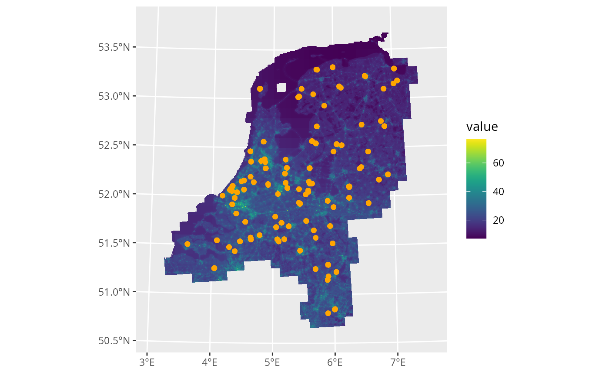
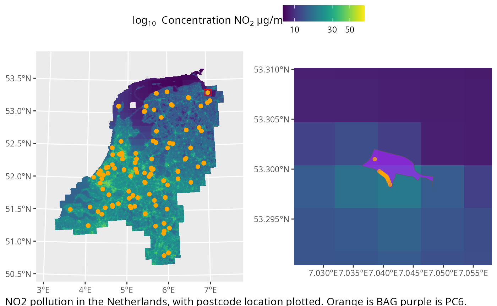

:construction: UNDER CONSTRUCTION :construction:
This article is incomplete!
Within this article the methods to plot the underlying spacial data postcodElapse work with will be explained. For this some preperation is required, we recommend installing the tidyverse, tidyterra and ggpubr R-packages. These work together for spacial plotting in R.
ELAPSE
To understand the spacial relation of postcodes some map is required, the best equivalent postcodElapse provides is ELAPSE. See the block below to load and plot ELAPSE.
library(tidyverse)
library(tidyterra)
library(postcodElapse)
elapse <- loadElapse()
ggplot() +
geom_spatraster(data = elapse) +
facet_wrap(~ lyr)
#> <SpatRaster> resampled to 500490 cells.
When plotting we recommend passing your data directly to the geom
with the data argument. When no facet is added the average of all layers
in ELAPSE will be plotted to a single figure. Use the $
operator to specify which layer to plot. All concentrations are in the
fill aesthetic with the unit: µg/m3. We recommend to assign
the fill colour with: ?tidyterra::scale_fill_grass_c().
Accessing postcode geo-locations
To plot the location of postcodes on ELAPSE the geo-location is
required these are provided trough:
pollutionFromBag() and pollutionFromPc6().
These function output spacial data in the geom column.
Plotting this data is achieved with geom_sf(), see the
block below.
load(system.file("extdata/postcode100.rda", package = "postcodElapse"))
pc6 <- pollutionFromPc6(postcode100, "../../../data/cbs_pc6_2024.gpkg")
#> Guessed db type to be: PC6
bag <- pollutionFromBag(postcode100, "../../../data/bag-light.gpkg")
#> Guessed db type to be: BAG
ggplot() +
geom_spatraster(data = elapse$NO2FULL) +
geom_sf(data = pc6, aes(geometry = geom), fill = "purple", alpha = 0.7) +
geom_sf(data = bag, aes(geometry = geom), colour = "orange") +
scale_fill_grass_c()
#> <SpatRaster> resampled to 500490 cells.
Zooming and insetting
Due to the scale of ELAPSE in many situations it is hard to visualize the data. To alleviate this we recommend creating an inset plot and marking the location of the zoom on the main plot. postcodElapse provides helpers to do this see the block below.
library(ggpubr) #used to arrange plots into one figure.
main <- ggplot() +
geom_spatraster(data = elapse$NO2FULL) +
geom_sf(data = pc6, aes(geometry = geom), fill = "purple", alpha = 0.7) +
geom_sf(data = bag, aes(geometry = geom), colour = "orange", alpha = 0.7) +
scale_fill_grass_c(transform = "log10") +
geom_rectFeature(pc6[100, ], 5000) +
labs(fill = bquote("log"[10]~" Concentration NO"[2]~"µg/m"^3)) +
theme(legend.position = "top")
#> <SpatRaster> resampled to 500490 cells.
inset <- ggplot() +
geom_spatraster(data = elapse$NO2FULL) +
geom_sf(data = pc6, aes(geometry = geom), fill = "purple", alpha = 0.7) +
geom_sf(data = bag, aes(geometry = geom), colour = "orange", alpha = 0.7) +
scale_fill_grass_c(transform = "log10") +
coord_zoomFeature(pc6[100, ])
#> <SpatRaster> resampled to 500490 cells.
fig <- ggarrange(main, inset, ncol = 2,
common.legend = TRUE,
legend.grob = get_legend(main))
annotate_figure(fig,
fig.lab.pos = "bottom.left",
fig.lab = "NO2 pollution in the Netherlands, with postcode location plotted. Orange is BAG purple is PC6.")
When using geom_rectFeatrue() and
coord_zoomFeature() ensure you subset entire rows using
[12, ]. Additionally air pollution estimate are always
returned in alpha numeric order.